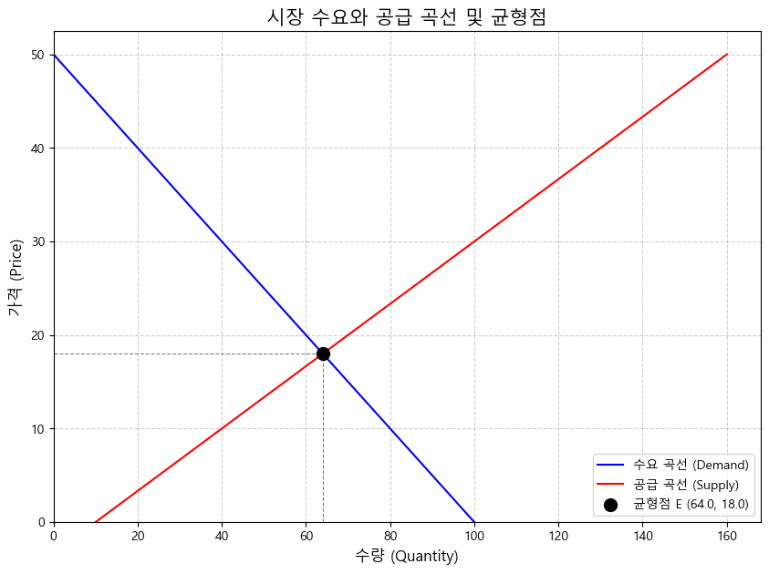
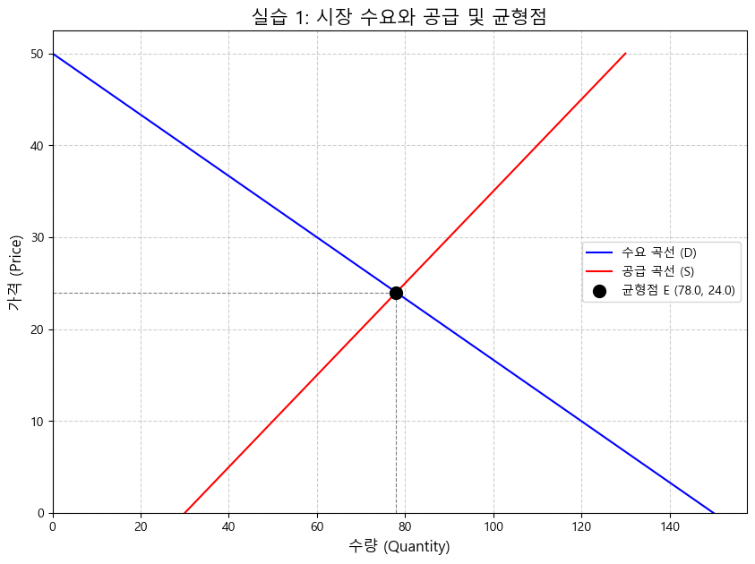
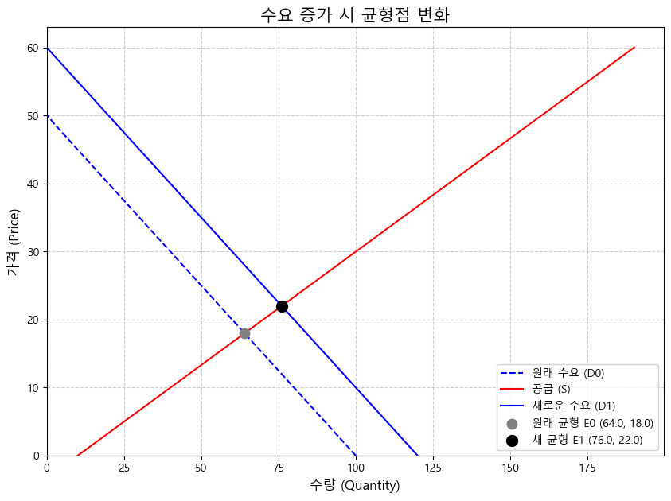
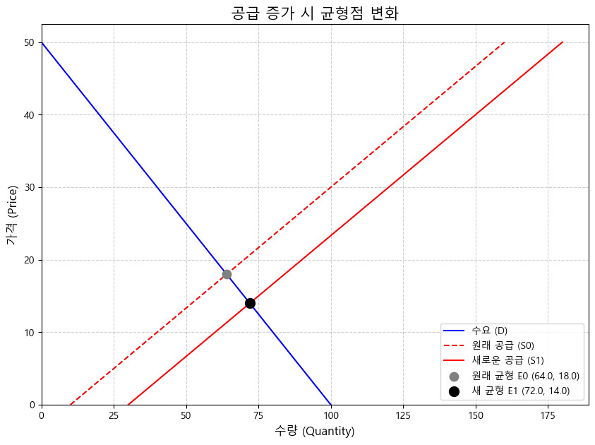
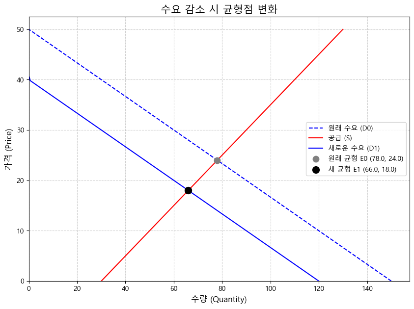

지난 5주차에는 코드를 재사용하고 구조화하는 강력한 도구인 함수(Function) 에 대해 배웠습니다. 함수를 통해 우리는 수요량 계산, 비용 계산 등 특정 경제 개념이나 계산 로직을 하나의 독립된 단위로 묶을 수 있었습니다. 또한, 딕셔너리를 활용하여 구조화된 데이터를 함수와 함께 사용하는 방법도 익혔습니다.
이번 주에는 우리가 배운 파이썬 지식, 특히 함수와 데이터 구조(리스트), 그리고 시각화(맛보기) 를 총동원하여 경제학의 가장 핵심적인 모델 중 하나인 수요와 공급 모형(Supply and Demand Model) 을 직접 구현하고 분석해 볼 것입니다. 파이썬 함수를 이용해 수요 곡선과 공급 곡선을 표현하고, 두 곡선이 만나는 시장 균형점(Market Equilibrium) 을 찾는 방법을 배웁니다. 더 나아가, 수요나 공급에 변화가 생겼을 때(곡선 이동) 시장 균형이 어떻게 변하는지 코드를 통해 시뮬레이션하고 시각적으로 확인해 보겠습니다. 이를 통해 파이썬이 어떻게 경제 모델을 분석하고 시장의 작동 원리를 이해하는 데 강력한 도구가 될 수 있는지 체감하게 될 것입니다.
이번 시간 학습 목표:
수요와 공급 모델의 기본 원리(수요/공급의 법칙, 시장 균형)를 복습하고 이해합니다.
파이썬 함수를 사용하여 수요 함수(\(Q_d = f(P)\))와 공급 함수(\(Q_s = g(P)\))를 정의할 수 있습니다.
간단한 선형 수요/공급 함수가 주어졌을 때, 대수적 방법으로 시장 균형 가격(\(P^*\))과 균형 거래량(\(Q^*\))을 계산하는 로직을 이해하고 파이썬 함수로 구현할 수 있습니다.
matplotlib 라이브러리를 사용하여 수요 곡선과 공급 곡선을 하나의 그래프에 그리고, 계산된 시장 균형점을 시각적으로 표시할 수 있습니다.
수요 또는 공급 곡선의 이동(shift) 이 시장 균형(가격, 거래량)에 미치는 영향을 파이썬 코드 수정 및 시각화를 통해 분석하고 설명할 수 있습니다.
6.1 1. 경제 모델링과 파이썬: 수요와 공급 복습
우리가 파이썬 프로그래밍을 배우는 중요한 이유 중 하나는 바로 경제 모델(Economic Model) 을 직접 만들고 분석하기 위해서입니다. 경제 모델은 복잡한 현실 세계를 단순화하여 경제 현상의 작동 원리를 이해하고 예측하는 데 도움을 주는 틀입니다.
그중에서도 수요와 공급 모델은 미시경제학의 가장 기본적이면서도 중요한 모델입니다.
수요(Demand): 특정 가격 수준에서 소비자들이 원하는 재화나 서비스의 양입니다. 일반적으로 가격이 오르면 수요량은 감소하고, 가격이 내리면 수요량은 증가합니다 (수요의 법칙, Law of Demand). 이는 보통 우하향하는 수요 곡선으로 표현됩니다.
공급(Supply): 특정 가격 수준에서 생산자들이 판매하려는 재화나 서비스의 양입니다. 일반적으로 가격이 오르면 공급량은 증가하고, 가격이 내리면 공급량은 감소합니다 (공급의 법칙, Law of Supply). 이는 보통 우상향하는 공급 곡선으로 표현됩니다.
시장 균형(Market Equilibrium): 수요량과 공급량이 일치하는 지점입니다 (\(Q_d = Q_s\)). 이 지점에서의 가격을 균형 가격(\(P^*\)), 거래량을 균형 거래량(\(Q^*\)) 이라고 합니다. 시장은 보이지 않는 손에 의해 이 균형점을 향해 움직이는 경향이 있습니다.
이제 파이썬을 이용해 이 모델을 어떻게 표현하고 분석할 수 있는지 살펴봅시다.
6.2 2. 수요와 공급 함수 정의하기 (파이썬 함수 활용)
지난주에 함수를 배웠으니, 수요량과 공급량을 계산하는 함수를 만들어 봅시다. 가장 간단한 형태인 선형(Linear) 함수를 사용하겠습니다.
선형 수요 함수:\(Q_d = a - bP\)
\(Q_d\): 수요량
\(P\): 가격
\(a\): 수요 곡선의 y절편 (가격이 0일 때 수요량, \(a > 0\)). 소득, 취향 등 가격 외 요인 변화 시 \(a\) 값 변동.
\(b\): 수요 곡선 기울기의 절댓값 (\(b > 0\)). 가격 변화에 대한 수요량의 민감도.
선형 공급 함수:\(Q_s = c + dP\)
\(Q_s\): 공급량
\(P\): 가격
\(c\): 공급 곡선의 y절편 (가격이 0일 때 공급량, \(c\)는 양수, 0, 또는 음수일 수 있음. 생산 기술, 요소 가격 등 가격 외 요인 변화 시 \(c\) 값 변동).
\(d\): 공급 곡선의 기울기 (\(d > 0\)). 가격 변화에 대한 공급량의 민감도.
이제 이 함수들을 파이썬 코드로 정의해 봅시다.
def quantity_demanded(price, a, b):"""선형 수요 함수 Q_d = a - bP 를 계산합니다."""# 가격이나 파라미터가 음수가 되는 비현실적인 경우를 고려할 수 있으나, 여기서는 단순화if b <=0:print("오류: 수요 곡선 기울기(b)는 양수여야 합니다.")returnNone q_d = a - b * pricereturnmax(0, q_d) # 수요량은 0 이상이어야 함def quantity_supplied(price, c, d):"""선형 공급 함수 Q_s = c + dP 를 계산합니다."""if d <=0:print("오류: 공급 곡선 기울기(d)는 양수여야 합니다.")returnNone q_s = c + d * pricereturnmax(0, q_s) # 공급량은 0 이상이어야 함# 예시 파라미터 설정 (가상 시장)# 수요: Qd = 100 - 2Pdemand_a =100demand_b =2# 공급: Qs = 10 + 3Psupply_c =10supply_d =3# 특정 가격에서 수요량 및 공급량 계산 테스트test_price =15qd_at_15 = quantity_demanded(test_price, demand_a, demand_b)qs_at_15 = quantity_supplied(test_price, supply_c, supply_d)print(f"가격이 {test_price}일 때:")print(f" 수요량(Qd): {qd_at_15}") # 100 - 2*15 = 70print(f" 공급량(Qs): {qs_at_15}") # 10 + 3*15 = 55
가격이 15일 때:
수요량(Qd): 70
공급량(Qs): 55
6.3 3. 시장 균형 찾기 (대수적 방법)
시장 균형은 수요량(\(Q_d\))과 공급량(\(Q_s\))이 같아지는 지점입니다. 즉, \(Q_d = Q_s\) 를 만족하는 가격(\(P^*\))과 거래량(\(Q^*\))을 찾는 것입니다.
선형 함수의 경우, 이 방정식을 \(P\)에 대해 풀면 균형 가격 \(P^*\)를 구할 수 있습니다.
\(Q_d = a - bP\)\(Q_s = c + dP\)
균형점에서 \(Q_d = Q_s\) 이므로, \(a - bP^* = c + dP^*\)\(a - c = bP^* + dP^*\)\(a - c = (b + d)P^*\)
따라서, 균형 가격 \(P^*\)는: \(P^* = \frac{a - c}{b + d}\)
균형 가격 \(P^*\)를 구한 뒤, 이를 수요 함수나 공급 함수 중 하나에 대입하면 균형 거래량 \(Q^*\)를 얻을 수 있습니다. \(Q^* = a - bP^*\) 또는 \(Q^* = c + dP^*\)
주의: * 분모 \((b + d)\) 가 0이 되면 안 됩니다. (보통 \(b>0, d>0\) 이므로 이 경우는 드뭅니다.) * 계산된 \(P^*\) 또는 \(Q^*\) 가 음수가 나오면, 해당 시장에서는 (주어진 함수 형태 하에서) 경제적으로 의미 있는 균형이 존재하지 않을 수 있습니다.
이제 이 계산 과정을 파이썬 함수로 만들어 봅시다.
def find_equilibrium(a, b, c, d):"""선형 수요(Qd=a-bP)와 공급(Qs=c+dP) 함수의 파라미터를 받아 균형 가격(P*)과 균형 거래량(Q*)을 계산하여 튜플로 반환합니다. 균형이 없거나 계산할 수 없는 경우 None을 반환합니다. """# 파라미터 유효성 검사 (기울기는 양수여야 함)if b <=0or d <=0:print("오류: 수요/공급 곡선 기울기(b, d)는 양수여야 합니다.")returnNone# 분모 (b+d)가 0인지 확인 (이론상 발생하기 어려움)if (b + d) ==0:print("오류: 수요와 공급 곡선 기울기 합이 0입니다. 균형 계산 불가.")returnNone# 균형 가격 계산 p_star = (a - c) / (b + d)# 균형 가격이 음수이면 의미 있는 균형 없음if p_star <0:print("계산된 균형 가격이 음수입니다. 시장 균형이 존재하지 않을 수 있습니다.")returnNone# 균형 거래량 계산 (수요 함수 사용) q_star = quantity_demanded(p_star, a, b) # 앞서 정의한 함수 사용# 또는 q_star = quantity_supplied(p_star, c, d) 사용해도 결과는 동일 (오차 제외)# 균형 거래량이 (계산 오차 감안하여) 0보다 작은 경우도 체크 가능# if q_star < -1e-9: # 아주 작은 음수까지는 허용 (부동소수점 오차)# print("계산된 균형 거래량이 음수입니다. 시장 균형이 존재하지 않을 수 있습니다.")# return Nonereturn p_star, q_star # 균형 가격과 균형 거래량을 튜플로 반환# 앞서 설정한 파라미터로 균형점 찾기# Qd = 100 - 2P, Qs = 10 + 3Pequilibrium = find_equilibrium(demand_a, demand_b, supply_c, supply_d)# 결과 출력if equilibrium: # 반환값이 None이 아닐 경우 (즉, 균형점을 찾은 경우) p_eq, q_eq = equilibrium # 튜플 언패킹 (결과를 각 변수에 할당)print(f"\n--- 시장 균형점 ---")print(f"균형 가격 (P*): {p_eq:.2f}") # P* = (100-10)/(2+3) = 90/5 = 18print(f"균형 거래량 (Q*): {q_eq:.2f}") # Q* = 100 - 2*18 = 64 (또는 10 + 3*18 = 64)else:print("\n시장 균형점을 찾을 수 없습니다.")
--- 시장 균형점 ---
균형 가격 (P*): 18.00
균형 거래량 (Q*): 64.00
6.4 4. 눈으로 보는 시장 균형: 수요와 공급 그래프 그리기
수요/공급 곡선과 균형점을 그래프로 시각화하면 시장의 작동 원리를 훨씬 직관적으로 이해할 수 있습니다. matplotlib 라이브러리를 사용하여 그래프를 그려봅시다.
경제학 그래프 vs 일반 그래프: 보통 수학이나 프로그래밍에서는 x축을 가로, y축을 세로로 그립니다. 하지만 경제학에서는 관례적으로 가격을 세로축(y축), 수량(거래량)을 가로축(x축) 에 놓고 그립니다. 이를 반영하여 그래프를 그려보겠습니다. 즉, \(P = f(Q)\) 형태의 함수를 그려야 합니다.
우리가 정의한 함수는 \(Q = f(P)\) 형태이므로, 그래프를 그리려면: 1. 가격(P) 범위를 정합니다. 2. 각 가격(P)에 대해 수요량(\(Q_d\))과 공급량(\(Q_s\))을 계산하여 리스트에 저장합니다. 3. 가로축에 수량 리스트, 세로축에 가격 리스트를 넣어 plt.plot() 함수를 호출합니다.
import matplotlib.pyplot as pltimport numpy as np # 수치 계산 및 배열 생성을 위해 NumPy 사용 (없으면 range로 대체 가능)import platform# 한글 폰트 설정 (이전 셀에서 실행했다고 가정)try:if platform.system() =='Linux': plt.rc('font', family='NanumBarunGothic')elif platform.system() =='Windows': plt.rc('font', family='Malgun Gothic')elif platform.system() =='Darwin': plt.rc('font', family='AppleGothic')exceptNameError: passexceptFileNotFoundError: print("한글 폰트를 찾을 수 없습니다.")plt.rcParams['axes.unicode_minus'] =False# --- 그래프를 위한 데이터 생성 ---# 파라미터 (이전 예제와 동일)a, b =100, 2# Qd = 100 - 2Pc, d =10, 3# Qs = 10 + 3P# 1. 가격(P) 범위 설정 (균형 가격 근처 포함하도록)# NumPy의 linspace(시작, 끝, 개수) 사용하면 편리. 또는 list(range(...)) 활용 가능p_max_demand = a / b # 수요량이 0이 되는 가격 (100/2 = 50)price_range = np.linspace(0, p_max_demand, 50) # 0부터 50까지 50개 가격 생성# 만약 NumPy가 없다면: price_range = list(range(0, 51, 1)) # 0부터 50까지 1단위 가격# 2. 각 가격에 대한 수요량(Qd) 및 공급량(Qs) 계산qd_values = [quantity_demanded(p, a, b) for p in price_range]qs_values = [quantity_supplied(p, c, d) for p in price_range]# 위 코드는 리스트 컴프리헨션(List Comprehension)으로, 아래 for문과 동일# qd_values = []# for p in price_range:# qd_values.append(quantity_demanded(p, a, b))# (qs_values도 동일하게 생성 가능)# 3. 균형점 계산equilibrium = find_equilibrium(a, b, c, d)if equilibrium: p_eq, q_eq = equilibriumelse: # 균형점 계산 실패 시 그래프에 표시하지 않음 p_eq, q_eq =None, None# --- 그래프 그리기 ---plt.figure(figsize=(10, 7))# 수요 곡선 플롯 (X축: 수량 Qd, Y축: 가격 P)plt.plot(qd_values, price_range, label='수요 곡선 (Demand)', color='blue')# 공급 곡선 플롯 (X축: 수량 Qs, Y축: 가격 P)plt.plot(qs_values, price_range, label='공급 곡선 (Supply)', color='red')# 균형점 표시 (균형점이 계산되었을 경우)if p_eq isnotNoneand q_eq isnotNone: plt.scatter(q_eq, p_eq, color='black', zorder=5, s=100, label=f'균형점 E ({q_eq:.1f}, {p_eq:.1f})')# 균형점까지 점선 추가 (선택 사항) plt.plot([q_eq, q_eq], [0, p_eq], color='grey', linestyle='--', linewidth=0.8) plt.plot([0, q_eq], [p_eq, p_eq], color='grey', linestyle='--', linewidth=0.8)# 그래프 제목 및 축 레이블 (경제학 관례에 맞게)plt.title('시장 수요와 공급 곡선 및 균형점', fontsize=15)plt.xlabel('수량 (Quantity)', fontsize=12)plt.ylabel('가격 (Price)', fontsize=12)plt.legend() # 범례 표시plt.grid(True, linestyle='--', alpha=0.6) # 그리드 표시# 축 범위 설정 (0 이상으로)plt.xlim(left=0)plt.ylim(bottom=0)plt.show()

그래프를 보면 파란색 수요 곡선과 빨간색 공급 곡선이 만나는 검은색 점이 정확히 우리가 앞에서 계산한 균형점(\(Q^* \approx 64, P^* = 18\))과 일치하는 것을 확인할 수 있습니다!
[실습 1] 균형점 계산 및 시각화
어떤 가상 상품 시장의 수요와 공급 함수가 다음과 같다고 가정합니다. * 수요 함수: \(Q_d = 150 - 3P\) * 공급 함수: \(Q_s = 30 + 2P\)
위 수요/공급 함수를 나타내는 파이썬 함수 quantity_demanded_ex1 와 quantity_supplied_ex1 을 정의하세요. (파라미터 a, b, c, d 값 확인!)
앞서 정의한 find_equilibrium 함수를 사용하여 이 시장의 균형 가격(\(P^*\))과 균형 거래량(\(Q^*\))을 계산하고 출력하세요.
NumPy 또는 range를 이용하여 적절한 가격 범위를 설정하고, 각 가격에 대한 수요량과 공급량 리스트를 만드세요.
matplotlib을 이용하여 수요 곡선과 공급 곡선을 그리고, 계산된 균형점을 그래프에 표시하세요. (X축: 수량, Y축: 가격)
# 실습 1-1: 함수 정의 (기존 함수 재사용)# quantity_demanded 함수와 quantity_supplied 함수는 이미 위에서 정의됨# 파라미터 설정a_ex1, b_ex1 =150, 3c_ex1, d_ex1 =30, 2
--- 실습 1 시장 균형점 ---
균형 가격 (P*): 24.00
균형 거래량 (Q*): 78.00
# 실습 1-3: 시각화를 위한 데이터 생성import numpy as npimport matplotlib.pyplot as plt# a, b, c, d 값 설정 (이미 위에서 함)# a_ex1, b_ex1 = 150, 3# c_ex1, d_ex1 = 30, 2# 적절한 가격 범위 설정p_max_demand_ex1 = a_ex1 / b_ex1price_range_ex1 = np.linspace(0, p_max_demand_ex1, 50)# 수요량 및 공급량 리스트 계산qd_values_ex1 = [quantity_demanded(p, a_ex1, b_ex1) for p in price_range_ex1]qs_values_ex1 = [quantity_supplied(p, c_ex1, d_ex1) for p in price_range_ex1]# 균형점 다시 계산 (그래프 표시용)# equilibrium_ex1 = find_equilibrium(a_ex1, b_ex1, c_ex1, d_ex1) # 이미 위에서 함# p_eq_ex1, q_eq_ex1 = (None, None) # 초기화# if equilibrium_ex1:# p_eq_ex1, q_eq_ex1 = equilibrium_ex1 # 이미 위에서 함
# 실습 1-4: 그래프 그리기# 한글 폰트 설정 등은 이전 셀에서 적용되었다고 가정plt.figure(figsize=(10, 7))plt.plot(qd_values_ex1, price_range_ex1, label='수요 곡선 (D)', color='blue')plt.plot(qs_values_ex1, price_range_ex1, label='공급 곡선 (S)', color='red')if p_eq_ex1 isnotNoneand q_eq_ex1 isnotNone: plt.scatter(q_eq_ex1, p_eq_ex1, color='black', zorder=5, s=100, label=f'균형점 E ({q_eq_ex1:.1f}, {p_eq_ex1:.1f})') plt.plot([q_eq_ex1, q_eq_ex1], [0, p_eq_ex1], color='grey', linestyle='--', linewidth=0.8) plt.plot([0, q_eq_ex1], [p_eq_ex1, p_eq_ex1], color='grey', linestyle='--', linewidth=0.8)plt.title('실습 1: 시장 수요와 공급 및 균형점', fontsize=15)plt.xlabel('수량 (Quantity)', fontsize=12)plt.ylabel('가격 (Price)', fontsize=12)plt.legend()plt.grid(True, linestyle='--', alpha=0.6)plt.xlim(left=0)plt.ylim(bottom=0)plt.show()

6.5 5. 수요와 공급의 변화 분석하기 (곡선 이동)
수요와 공급 곡선은 고정된 것이 아니라, 가격 외 다른 요인들에 의해 이동(shift) 할 수 있습니다.
수요 곡선 이동 요인: 소득 변화, 연관재 가격 변화, 소비자의 취향 변화, 미래 가격 예상 변화, 인구 변화 등
공급 곡선 이동 요인: 기술 발전, 생산 요소 가격 변화, 정부 정책(세금, 보조금), 미래 가격 예상 변화, 공급자 수 변화 등
파이썬 함수를 이용하면 이러한 변화를 파라미터 수정으로 쉽게 반영하고, 새로운 균형점을 계산하며 시각화를 통해 그 효과를 직관적으로 확인할 수 있습니다.
예제 1: 수요 증가 시뮬레이션
소득 증가로 인해 수요 함수의 \(a\) 값이 100에서 120으로 증가했다고 가정해 봅시다. (\(Q_d = 120 - 2P\), 공급은 \(Q_s = 10 + 3P\) 로 동일)
# --- 수요 증가 시뮬레이션 ---# 원래 파라미터a_old, b_old =100, 2c_old, d_old =10, 3# 수요 증가 후 새 파라미터 (a만 변경)a_new =120b_new = b_old # b는 그대로c_new, d_new = c_old, d_old # 공급은 그대로# 1. 새로운 균형점 계산equilibrium_new_demand = find_equilibrium(a_new, b_new, c_new, d_new)if equilibrium_new_demand: p_eq_new_d, q_eq_new_d = equilibrium_new_demandprint("--- 수요 증가 후 새로운 균형점 ---")print(f"새 균형 가격 (P*'): {p_eq_new_d:.2f}") # (120-10)/(2+3) = 110/5 = 22print(f"새 균형 거래량 (Q*'): {q_eq_new_d:.2f}") # 120 - 2*22 = 76else:print("새로운 균형점을 찾을 수 없습니다.") p_eq_new_d, q_eq_new_d =None, None# 시각화를 위해 초기화# 2. 시각화: 이전 곡선과 새 수요 곡선, 새 균형점 표시price_range_shift = np.linspace(0, a_new / b_new, 50) # 새 수요에 맞춰 가격 범위 조정qd_values_old = [quantity_demanded(p, a_old, b_old) for p in price_range_shift]qs_values_shift = [quantity_supplied(p, c_new, d_new) for p in price_range_shift]qd_values_new = [quantity_demanded(p, a_new, b_new) for p in price_range_shift]# 원래 균형점 (위에서 계산된 값 사용)# p_eq, q_eqplt.figure(figsize=(10, 7))# 원래 수요(파선), 공급 곡선plt.plot(qd_values_old, price_range_shift, label='원래 수요 (D0)', color='blue', linestyle='--')plt.plot(qs_values_shift, price_range_shift, label='공급 (S)', color='red')# 새로운 수요 곡선 (실선)plt.plot(qd_values_new, price_range_shift, label='새로운 수요 (D1)', color='blue', linestyle='-')# 원래 균형점 표시if p_eq isnotNoneand q_eq isnotNone: plt.scatter(q_eq, p_eq, color='grey', zorder=5, s=80, label=f'원래 균형 E0 ({q_eq:.1f}, {p_eq:.1f})')# 새로운 균형점 표시if p_eq_new_d isnotNoneand q_eq_new_d isnotNone: plt.scatter(q_eq_new_d, p_eq_new_d, color='black', zorder=5, s=100, label=f'새 균형 E1 ({q_eq_new_d:.1f}, {p_eq_new_d:.1f})')plt.title('수요 증가 시 균형점 변화', fontsize=15)plt.xlabel('수량 (Quantity)', fontsize=12)plt.ylabel('가격 (Price)', fontsize=12)plt.legend()plt.grid(True, linestyle='--', alpha=0.6)plt.xlim(left=0)plt.ylim(bottom=0)plt.show()# 결과 해석print("\n결과 해석: 수요 증가는 균형 가격과 균형 거래량을 모두 상승시킵니다.")print(f"(P: {p_eq:.1f} -> {p_eq_new_d:.1f}), (Q: {q_eq:.1f} -> {q_eq_new_d:.1f})")
--- 수요 증가 후 새로운 균형점 ---
새 균형 가격 (P*'): 22.00
새 균형 거래량 (Q*'): 76.00

결과 해석: 수요 증가는 균형 가격과 균형 거래량을 모두 상승시킵니다.
(P: 18.0 -> 22.0), (Q: 64.0 -> 76.0)
그래프에서 수요 곡선이 오른쪽으로 이동(D0 -> D1)하면서 균형점(E0 -> E1)이 오른쪽 위로 이동하여 가격과 거래량 모두 증가하는 것을 명확히 볼 수 있습니다.
예제 2: 공급 증가 시뮬레이션 (기술 발전)
기술 발전으로 공급 곡선의 \(c\) 값이 10에서 30으로 증가했다고 가정해 봅시다. (\(Q_s = 30 + 3P\), 수요는 \(Q_d = 100 - 2P\) 로 동일)
# --- 공급 증가 시뮬레이션 ---# 원래 파라미터a_old, b_old =100, 2c_old, d_old =10, 3# 공급 증가 후 새 파라미터 (c만 변경)a_new_s = a_oldb_new_s = b_old # 수요는 그대로c_new_s =30# c 값 증가d_new_s = d_old # d는 그대로# 1. 새로운 균형점 계산equilibrium_new_supply = find_equilibrium(a_new_s, b_new_s, c_new_s, d_new_s)if equilibrium_new_supply: p_eq_new_s, q_eq_new_s = equilibrium_new_supplyprint("--- 공급 증가 후 새로운 균형점 ---")print(f"새 균형 가격 (P*''): {p_eq_new_s:.2f}") # (100-30)/(2+3) = 70/5 = 14print(f"새 균형 거래량 (Q*''): {q_eq_new_s:.2f}") # 100 - 2*14 = 72else:print("새로운 균형점을 찾을 수 없습니다.") p_eq_new_s, q_eq_new_s =None, None# 2. 시각화: 이전 곡선과 새 공급 곡선, 새 균형점 표시price_range_shift_s = np.linspace(0, a_new_s / b_new_s, 50)qd_values_shift_s = [quantity_demanded(p, a_new_s, b_new_s) for p in price_range_shift_s]qs_values_old = [quantity_supplied(p, c_old, d_old) for p in price_range_shift_s]qs_values_new = [quantity_supplied(p, c_new_s, d_new_s) for p in price_range_shift_s]# 원래 균형점 (이전 계산 값 사용)# p_eq, q_eqplt.figure(figsize=(10, 7))# 수요 곡선, 원래 공급 곡선(파선)plt.plot(qd_values_shift_s, price_range_shift_s, label='수요 (D)', color='blue')plt.plot(qs_values_old, price_range_shift_s, label='원래 공급 (S0)', color='red', linestyle='--')# 새로운 공급 곡선 (실선)plt.plot(qs_values_new, price_range_shift_s, label='새로운 공급 (S1)', color='red', linestyle='-')# 원래 균형점 표시if p_eq isnotNoneand q_eq isnotNone: plt.scatter(q_eq, p_eq, color='grey', zorder=5, s=80, label=f'원래 균형 E0 ({q_eq:.1f}, {p_eq:.1f})')# 새로운 균형점 표시if p_eq_new_s isnotNoneand q_eq_new_s isnotNone: plt.scatter(q_eq_new_s, p_eq_new_s, color='black', zorder=5, s=100, label=f'새 균형 E1 ({q_eq_new_s:.1f}, {p_eq_new_s:.1f})')plt.title('공급 증가 시 균형점 변화', fontsize=15)plt.xlabel('수량 (Quantity)', fontsize=12)plt.ylabel('가격 (Price)', fontsize=12)plt.legend()plt.grid(True, linestyle='--', alpha=0.6)plt.xlim(left=0)plt.ylim(bottom=0)plt.show()# 결과 해석print("\n결과 해석: 공급 증가는 균형 가격을 하락시키고 균형 거래량을 상승시킵니다.")print(f"(P: {p_eq:.1f} -> {p_eq_new_s:.1f}), (Q: {q_eq:.1f} -> {q_eq_new_s:.1f})")
--- 공급 증가 후 새로운 균형점 ---
새 균형 가격 (P*''): 14.00
새 균형 거래량 (Q*''): 72.00

결과 해석: 공급 증가는 균형 가격을 하락시키고 균형 거래량을 상승시킵니다.
(P: 18.0 -> 14.0), (Q: 64.0 -> 72.0)
그래프에서 공급 곡선이 오른쪽으로 이동(S0 -> S1)하면서 균형점(E0 -> E1)이 오른쪽 아래로 이동하여 가격은 하락하고 거래량은 증가하는 것을 명확히 볼 수 있습니다.
[실습 2] 수요/공급 변화 분석
실습 1의 시장(\(Q_d = 150 - 3P\), \(Q_s = 30 + 2P\))을 기준으로 다음 변화의 효과를 분석하세요.
수요 감소: 소비자들의 선호도 감소로 수요 함수의 \(a\) 값이 150에서 120으로 감소했습니다 (\(Q_d = 120 - 3P\)). 공급 함수는 그대로입니다. 새로운 균형 가격과 거래량을 계산하고, 원래 균형과 비교하여 가격과 거래량이 어떻게 변했는지 설명하세요.
(선택) 시각화: 위 수요 감소 상황을 시각화하세요. 원래 수요/공급 곡선과 변경된 수요 곡선, 그리고 원래 균형점과 새로운 균형점을 하나의 그래프에 표시하세요.
힌트 템플릿
# 실습 2-1: 수요 감소 후 새 균형점 계산 및 변화 설명
# 원래 파라미터 (실습 1 기준)
a_ex1_old, b_ex1_old = 150, 3
c_ex1_old, d_ex1_old = 30, 2
# 수요 감소 후 새 파라미터
a_ex1_new = 120
b_ex1_new = b_ex1_old
c_ex1_new, d_ex1_new = c_ex1_old, d_ex1_old
# 새로운 균형점 계산
equilibrium_new_demand_ex1 = # find_equilibrium 호출
p_eq_new_d_ex1, q_eq_new_d_ex1 = None, None
if equilibrium_new_demand_ex1:
p_eq_new_d_ex1, q_eq_new_d_ex1 = equilibrium_new_demand_ex1
print("--- 수요 감소 후 새로운 균형점 ---")
# 새 균형 가격과 거래량 출력
# 원래 균형점 (실습 1 정답 값 활용)
# p_eq_ex1, q_eq_ex1 = 24, 78
# 변화 설명 출력
# 여기에 가격과 거래량이 어떻게 변했는지 설명하는 print 문 작성
# 실습 2-1: 수요 감소 후 새 균형점 계산 및 변화 설명# 원래 파라미터 (실습 1 기준)a_ex1_old, b_ex1_old =150, 3c_ex1_old, d_ex1_old =30, 2# 수요 감소 후 새 파라미터a_ex1_new =120b_ex1_new = b_ex1_oldc_ex1_new, d_ex1_new = c_ex1_old, d_ex1_old# 새로운 균형점 계산equilibrium_new_demand_ex1 = find_equilibrium(a_ex1_new, b_ex1_new, c_ex1_new, d_ex1_new)p_eq_new_d_ex1, q_eq_new_d_ex1 =None, Noneif equilibrium_new_demand_ex1: p_eq_new_d_ex1, q_eq_new_d_ex1 = equilibrium_new_demand_ex1print("--- 수요 감소 후 새로운 균형점 ---")print(f"새 균형 가격 (P*'): {p_eq_new_d_ex1:.2f}") # (120-30)/(3+2) = 90/5 = 18print(f"새 균형 거래량 (Q*'): {q_eq_new_d_ex1:.2f}") # 120 - 3*18 = 66else:print("새로운 균형점을 찾을 수 없습니다.")# 원래 균형점 (실습 1 정답 값)p_eq_ex1, q_eq_ex1 =24, 78# 변화 설명 출력print("\n--- 균형점 변화 분석 ---")if p_eq_new_d_ex1 isnotNoneand q_eq_new_d_ex1 isnotNone:print("수요 감소는 원래 균형점(P=24, Q=78)과 비교하여")print(f"균형 가격을 {p_eq_ex1:.1f}에서 {p_eq_new_d_ex1:.1f}로 하락시키고,")print(f"균형 거래량을 {q_eq_ex1:.1f}에서 {q_eq_new_d_ex1:.1f}로 감소시킵니다.")else:print("원래 또는 새로운 균형점을 계산할 수 없어 변화를 분석할 수 없습니다.")
--- 수요 감소 후 새로운 균형점 ---
새 균형 가격 (P*'): 18.00
새 균형 거래량 (Q*'): 66.00
--- 균형점 변화 분석 ---
수요 감소는 원래 균형점(P=24, Q=78)과 비교하여
균형 가격을 24.0에서 18.0로 하락시키고,
균형 거래량을 78.0에서 66.0로 감소시킵니다.
# 실습 2-2 (선택): 수요 감소 시각화import numpy as npimport matplotlib.pyplot as plt# 파라미터 설정 (old, new)a_ex1_old, b_ex1_old =150, 3c_ex1_old, d_ex1_old =30, 2a_ex1_new =120b_ex1_new = b_ex1_oldc_ex1_new, d_ex1_new = c_ex1_old, d_ex1_old# 가격 범위 설정p_max_demand_ex1_old = a_ex1_old / b_ex1_oldp_max_demand_ex1_new = a_ex1_new / b_ex1_newprice_range_ex1_shift = np.linspace(0, p_max_demand_ex1_old, 50) # 더 넓은 범위 사용# 수요/공급량 리스트 계산qd_values_ex1_old = [quantity_demanded(p, a_ex1_old, b_ex1_old) for p in price_range_ex1_shift]qs_values_ex1_shift = [quantity_supplied(p, c_ex1_new, d_ex1_new) for p in price_range_ex1_shift]qd_values_ex1_new = [quantity_demanded(p, a_ex1_new, b_ex1_new) for p in price_range_ex1_shift]# 균형점 정보 (원래, 새로운 - 위 셀에서 계산됨)# p_eq_ex1, q_eq_ex1 = 24, 78# p_eq_new_d_ex1, q_eq_new_d_ex1 = 18, 66# 그래프 그리기# 한글 폰트 설정 등은 이전에 적용되었다고 가정plt.figure(figsize=(10, 7))plt.plot(qd_values_ex1_old, price_range_ex1_shift, label='원래 수요 (D0)', color='blue', linestyle='--')plt.plot(qs_values_ex1_shift, price_range_ex1_shift, label='공급 (S)', color='red')plt.plot(qd_values_ex1_new, price_range_ex1_shift, label='새로운 수요 (D1)', color='blue', linestyle='-')if p_eq_ex1 isnotNoneand q_eq_ex1 isnotNone: plt.scatter(q_eq_ex1, p_eq_ex1, color='grey', zorder=5, s=80, label=f'원래 균형 E0 ({q_eq_ex1:.1f}, {p_eq_ex1:.1f})')if p_eq_new_d_ex1 isnotNoneand q_eq_new_d_ex1 isnotNone: plt.scatter(q_eq_new_d_ex1, p_eq_new_d_ex1, color='black', zorder=5, s=100, label=f'새 균형 E1 ({q_eq_new_d_ex1:.1f}, {p_eq_new_d_ex1:.1f})')plt.title('수요 감소 시 균형점 변화', fontsize=15)plt.xlabel('수량 (Quantity)', fontsize=12)plt.ylabel('가격 (Price)', fontsize=12)plt.legend()plt.grid(True, linestyle='--', alpha=0.6)plt.xlim(left=0)plt.ylim(bottom=0)plt.show()

6.6 6. 마무리 및 다음 시간 예고
오늘은 파이썬 함수와 기본 로직을 활용하여 경제학의 핵심 모델인 수요와 공급 모형을 구현하고 분석하는 방법을 배웠습니다. 함수로 수요와 공급 관계를 표현하고, 대수적으로 시장 균형점을 계산했으며, matplotlib을 이용해 이를 시각화하여 눈으로 확인했습니다. 또한, 수요나 공급 곡선이 이동했을 때 새로운 균형점이 어떻게 변하는지 시뮬레이션하고 그 결과를 그래프로 분석하는 과정까지 경험했습니다. 이를 통해 파이썬이 단순한 코딩 도구를 넘어, 경제 이론을 검증하고 시장 현상을 분석하는 강력한 도구가 될 수 있음을 확인하셨기를 바랍니다.
다음 시간에는:
이번 주까지 파이썬의 기본적인 문법과 자료 구조, 제어 흐름, 함수, 그리고 간단한 모델링 및 시각화까지 경험했습니다. 다음 주에는 본격적으로 데이터 시각화(Data Visualization) 에 초점을 맞추어 matplotlib 라이브러리의 다양한 기능을 좀 더 체계적으로 배우는 시간을 갖겠습니다. 여러 종류의 그래프(선, 막대, 산점도 등)를 그리는 방법, 그래프의 축, 제목, 범례 등을 꾸미는 방법 등을 익혀서 데이터를 더욱 효과적으로 표현하고 전달하는 능력을 키울 것입니다.
6.7 여섯 번째 주차 과제
오늘 배운 수요/공급 모델링 및 분석을 연습하기 위해 다음 과제를 Colab에서 새 노트(Week6_Assignment.ipynb 등)에 풀어보세요.
새로운 시장 분석: 어떤 시장의 수요 함수가 \(Q_d = 200 - 4P\) 이고, 공급 함수가 \(Q_s = 50 + P\) 라고 합니다.
이 시장의 균형 가격(\(P^*\))과 균형 거래량(\(Q^*\))을 계산하세요. (함수 정의 및 find_equilibrium 활용)
(선택) 계산된 균형점을 포함하여 수요/공급 곡선을 시각화하세요.
공급 감소 분석: 위 1번 시장에서, 생산 비용 증가로 공급 함수가 \(Q_s = 20 + P\) 로 변했다고 가정합니다 (\(c\) 값이 50에서 20으로 감소). 수요 함수는 그대로입니다.
새로운 균형 가격과 거래량을 계산하세요.
공급 감소가 균형 가격과 거래량에 어떤 영향을 미쳤는지 원래 균형과 비교하여 설명하세요.
(선택) 원래 수요/공급 곡선과 변경된 공급 곡선, 그리고 원래 균형점과 새로운 균형점을 하나의 그래프에 시각화하세요.
수요/공급 동시 변화 (생각해보기): 만약 위 1번 시장에서 소득 증가로 수요가 \(Q_d = 220 - 4P\) 로 증가하는 동시에, 기술 발전으로 공급이 \(Q_s = 60 + P\) 로 증가했다면, 새로운 균형 가격과 거래량은 어떻게 변할지 계산해보고, 원래 균형과 비교하여 설명해보세요. (시각화는 선택)